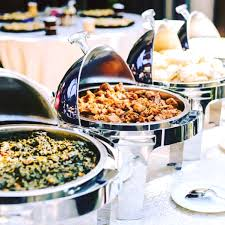

The earliest account of major services being catered in the United States is a 1778 ball in Philadelphia catered by Caesar Cranshell to celebrate the departure of British General William Howe.[1] Catering business began to form around 1820, centering in Philadelphia.[1][2] Catering being a respectable and profitable business. The early catering industry was disproportionately founded by African-Americans.[1][2][3] The industry began to professionalize under the reigns of Robert Bogle who is recognized as "the originator of catering."[2] By 1840, the second generation of Philadelphia black caterers formed, who began to combine their catering businesses with restaurants they owned.[2] Common usage of the word "caterer" came about in the 1880s at which point local directories began listing numerous caterers.[1] White businessmen eventually moved into the industry and by the 1930s, the black businesses had virtually disappeared.[1] In the 1930s, the Soviet Union, creating more simple menus, began developing state public catering establishments as part of its collectivization policies.[4] A rationing system was implemented during World War II, and people became used to public catering. After the Second World War, many businessmen embraced catering as an alternative way of staying in business after the war.[5] By the 1960s, the home-made food was overtaken by eating in public catering establishments.[4] By the 2000s, personal chef services started gaining popularity, with more women entering the workforce.[citation needed] People between 15 and 24 years of age spent as little as 11-17 minutes daily on food preparation and clean-up activities in 2006-2016, according to figures revealed by the American Time Use Survey conducted by the US Bureau of Labor Statistics[
Catering and restaurant management can be an enjoyable field for customer service oriented individuals who enjoy doing something different every day. At a restaurant or catering company, a manager might be in charge of monitoring inventory and ordering supplies, hiring and training staff, working with chefs to create menus and dealing with customer issues. They should handle change and stress well, be organized and possess good problem-solving skills. Because most restaurants are open on evenings and weekends, individuals who work in this field should be flexible and willing to work long hours.